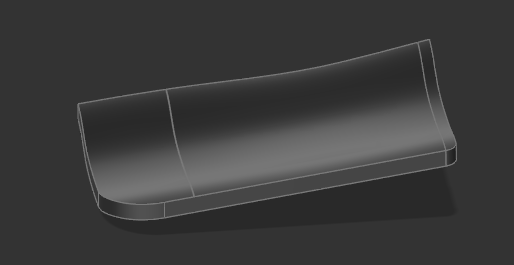
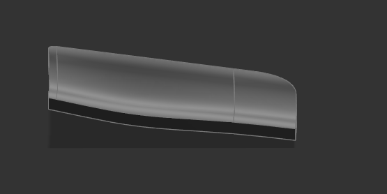
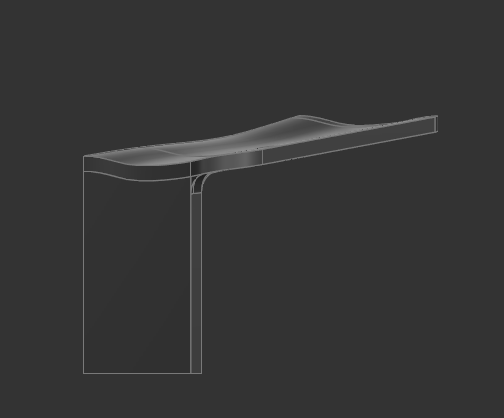
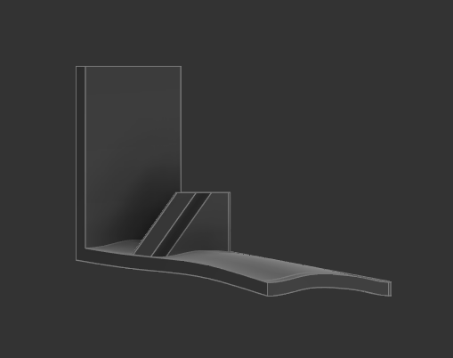
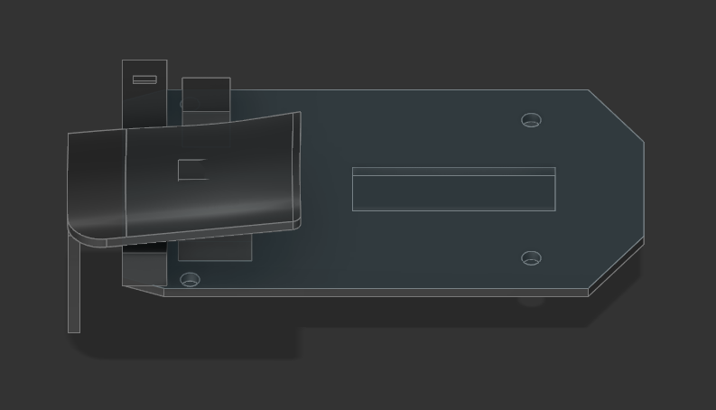

soph week 5/26 - 5/30
we were given an extra week to work on the sumobot, but we didn’t want to continue working on our sumobot seeing that we already did decently.
as a result, i decided to revisit my zeromouse project as i want to finish it before the end of the school year.
seniors are leaving, so i had to transfer everything to an actual computer. currently trying to install linux mint with lots of problems lol.
trigger updates
if you recall from my previous blog post, the left side of my triggers were pretty messed up as both sides had different geometries.
i tried using a sweep to redo this design, but i figured out that you can’t sweep with two rails.
so i asked help from tim who suggested that i should loft part of it, then extrude the rest of the sides outwards to get the same size and geometry.
left side of the mouse trigger
this ended up working perfectly, and fixed the problems with my mouse trigger that i had previously.
right side of the mouse trigger
in the end, my triggers were almost a one-to-one copy of the original.
after fixing the general shape, i had to create the “stand” for the mouse to mount onto the shell.
had some problems with this one as well, but thanks to tim again, i got the stand to work. this may be adjusted slightly to fit my shell design, but it’s looking promising so far.
clicking mechanism + problems
the final thing i had to do before testing out the print was making a clicking mechanism. had some problems creating the ramp and the clicker? (what do i call this) as it was a curved surface, so i wasn’t able to directly make a sketch and extrude outwards.
with all of this done, i can now mirror it to create the right trigger when it’s done. a problem was present however.
as seen in the image, the scroll wheel stand was too tall for the trigger so i’ll have to adjust the clicking thingy’s length and the length of the stand so that the trigger doesn’t get in the way. additionally, i may have to move the position of the clicker further upwards so the scroll wheel isn’t in a weird place again.